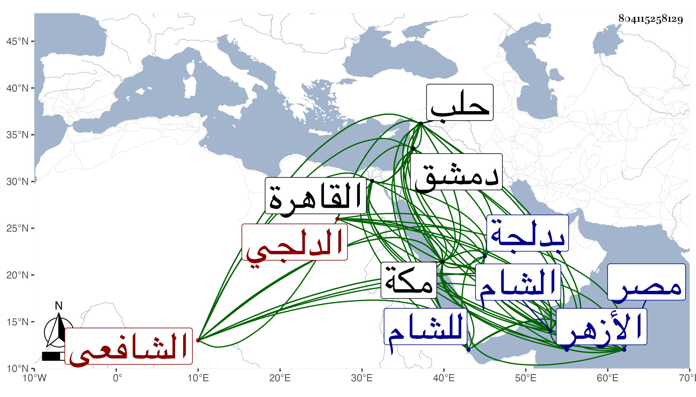

0902Sakhawi.DawLamic.ITO20230111-ara1.EIS1600.804115258129
Biography ID: 804115258129
495
محمد بن محمد بن محمد بن أحمد الشمس الدلجي الشافعي نزيل مكة . ولد سنة ستين وثمانمائة تقريبا بدلجة ونشأ بها يتيما فحفظ القرآن ثم تحول مع عمه إلى القاهرة فقطن الأزهر سنة وقرأ في التنبيه ثم بمفرده إلى الشام فدام بها مدة دخل في أثنائها حلب فأقام بها أربع سنين وأخذ في دمشق عن الزين خطاب في الفقه وغيره ولازمه نحو سنتين والشهاب الزرعي والتقى بن قاضي عجلون وبه تفقه وعنه أخذ أصول الفقه وقرأ في المنطق وبعض المطول على ملا زاده . وأكمل المطول على غيره وفي المعاني والبيان على ملا حاجي والعربية والعروض على المحب البصروي بل قرأ عليه بعض شرحه على الإرشاد ومصنفه في الفرائض وشرحه بكمالهما ولازم البقاعي هناك حتى قرأ عليه صحيح مسلم وسمع في غيره بحثا وغيره وفي حلب على قل درويش بعض شرح العقائد وعلى عثمان الطرابلسي في الكشاف وسافر من الشام لمكة فقطنها من سنة اثنتين وتسعين وحضر بها دروس القاضي وربما أقرأ ، وذكر لي أنه اختصر المنهاج وله نظم وسمع مني وعلي أشياء وكان يتأسف على عدم تحصيل تصانيفي لمزيد فاقته ولما اشتد الغلاء بمكة توجه في أثناء سنة تسع وتسعين بحرا إما للشام أو لمصر أو لهما أنجح الله قصده .
